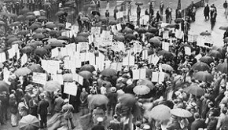

Introducción

La década de 1930 fue un período de importantes cambios políticos y sociales en Argentina. Comenzó con el golpe de Estado de 1930 que derrocó al presidente Hipólito Yrigoyen y puso fin a una etapa de gobiernos elegidos mediante el voto popular.
A partir de ese momento se inició un período conocido como Década Infame, caracterizado por la intervención militar en la política, el predominio de sectores conservadores y la utilización del fraude electoral para mantenerse en el poder.
El Golpe de Estado de 1930
El 6 de septiembre de 1930 un grupo de militares encabezados por José Félix Uriburu derrocó al presidente Hipólito Yrigoyen.
Este fue el primer golpe militar exitoso del siglo XX en Argentina y marcó una ruptura del orden constitucional.
El golpe contó con el apoyo de sectores conservadores, parte de la prensa y grupos económicos que responsabilizaban al gobierno por la crisis económica que atravesaba el país.
Gobierno de José Félix Uriburu
Uriburu gobernó entre 1930 y 1932. Su objetivo era modificar el sistema político argentino e implementar un modelo más autoritario.
Durante su gobierno se suspendieron garantías constitucionales, se persiguió a opositores políticos y se limitaron diversas libertades públicas.
Aunque intentó transformar profundamente el sistema político, finalmente se convocaron elecciones para 1931.
La Concordancia
Luego de la presidencia de Uriburu surgió una alianza política conocida como la Concordancia.
Esta agrupación estaba integrada por sectores conservadores, radicales antipersonalistas y grupos políticos que apoyaban al nuevo régimen.
La Concordancia dominó gran parte de la vida política durante la década de 1930.
Agustín P. Justo
En 1932 asumió la presidencia Agustín P. Justo, uno de los principales dirigentes de la Concordancia.
Su gobierno buscó estabilizar la situación económica y fortalecer los vínculos con los sectores empresariales y agroexportadores.
Durante este período se llevó adelante una creciente intervención estatal en la economía y se firmó el Pacto Roca-Runciman con el Reino Unido.
El Fraude Patriótico
Una de las características más conocidas de la Década Infame fue el fraude patriótico.
Con esta expresión se identifica el conjunto de prácticas utilizadas para asegurar la victoria de los candidatos oficialistas en las elecciones.
Entre estas prácticas se encontraban la manipulación de padrones, el control de las mesas electorales y distintas formas de presión sobre los votantes.
Gracias a estos mecanismos los sectores conservadores lograron mantenerse en el gobierno durante varios años.
La Oposición Política
Diversos sectores cuestionaron la falta de transparencia electoral.
La Unión Cívica Radical denunció reiteradamente el fraude y durante algunos años adoptó una política de abstención electoral.
Otros partidos y movimientos también criticaron las prácticas políticas de la época.
Movimiento Obrero
El crecimiento de la industria provocó un aumento del número de trabajadores urbanos.
Como consecuencia, los sindicatos adquirieron mayor relevancia en la vida social y política.
Los trabajadores comenzaron a organizarse para reclamar mejores condiciones laborales y salariales.
Creación de la CGT
En 1930 se creó la Confederación General del Trabajo (CGT).
Este organismo agrupó a numerosos sindicatos y se convirtió en una de las organizaciones más importantes del movimiento obrero argentino.
La CGT buscó representar los intereses de los trabajadores y fortalecer la organización sindical.
Migraciones Internas
El desarrollo industrial generó movimientos de población desde las zonas rurales hacia las ciudades.
Miles de personas llegaron a Buenos Aires, Rosario y Córdoba en busca de empleo y mejores oportunidades.
Este fenómeno modificó la estructura social argentina y contribuyó al crecimiento de los centros urbanos.
Transformaciones Sociales
- Crecimiento de la población urbana.
- Aumento de trabajadores industriales.
- Mayor participación sindical.
- Expansión de sectores medios.
- Cambios en los hábitos de consumo.
- Desarrollo de nuevos espacios culturales.
La Radio
Durante la década de 1930 la radio se convirtió en uno de los medios de comunicación más importantes.
Millones de personas comenzaron a seguir noticias, programas musicales y transmisiones deportivas desde sus hogares.
La radio facilitó una comunicación más rápida y permitió la difusión masiva de información y entretenimiento.
El Tango
El tango alcanzó una enorme popularidad tanto en Argentina como en otros países.
Figuras como Carlos Gardel contribuyeron a la difusión internacional de este género musical.
El tango pasó a formar parte de la identidad cultural argentina.
El Cine Nacional
La industria cinematográfica argentina también experimentó un notable crecimiento.
La aparición del cine sonoro favoreció la producción de películas nacionales y el desarrollo de nuevos artistas.
Los cines se transformaron en uno de los principales espacios de ocio para la población urbana.
Gobierno de Roberto M. Ortiz
En 1938 asumió la presidencia Roberto M. Ortiz.
Ortiz intentó implementar algunas reformas destinadas a limitar el fraude electoral y fortalecer las instituciones democráticas.
Sin embargo, problemas de salud lo obligaron a reducir progresivamente su actividad política.
Ramón Castillo
Tras el alejamiento de Ortiz, Ramón Castillo asumió la conducción del gobierno.
Durante su presidencia continuaron las tensiones políticas y crecieron las críticas hacia el sistema implementado durante la Década Infame.
El Golpe de 1943
El 4 de junio de 1943 un nuevo golpe militar puso fin al período iniciado en 1930.
Este acontecimiento cerró la etapa conocida como Década Infame y abrió una nueva fase en la historia política argentina.
Conclusión
La década de 1930 fue una etapa marcada por la crisis económica, el fraude electoral y la reorganización del poder político.
Al mismo tiempo, se produjeron importantes cambios sociales como el crecimiento de las ciudades, la expansión del movimiento obrero y el desarrollo de nuevas formas de cultura urbana.
Por estas razones, este período constituye uno de los momentos más significativos para comprender la historia argentina del siglo XX.